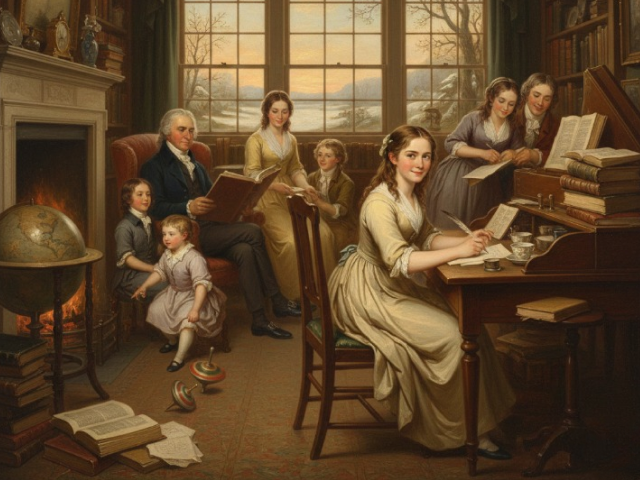
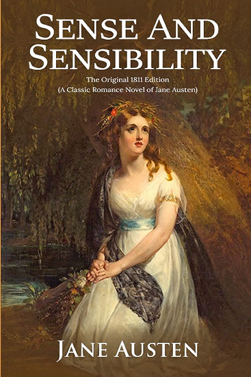
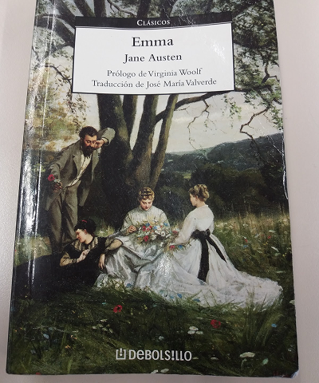
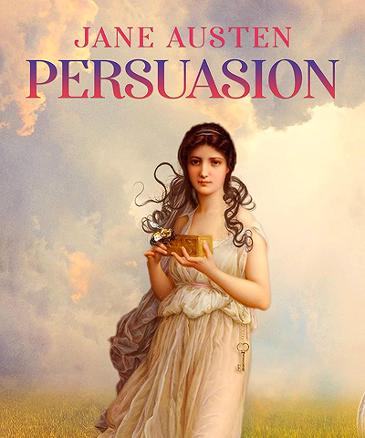
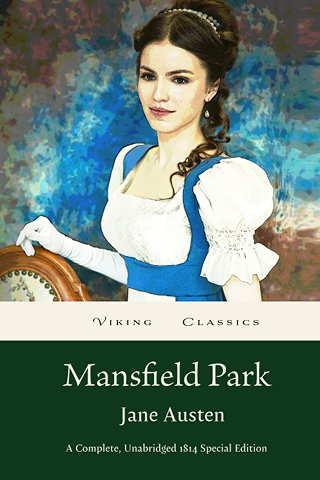
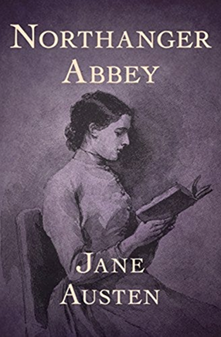
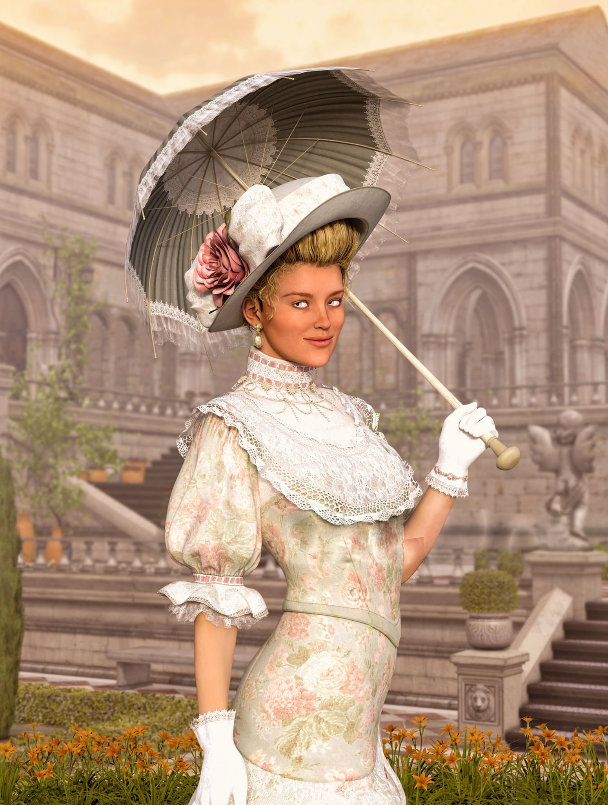
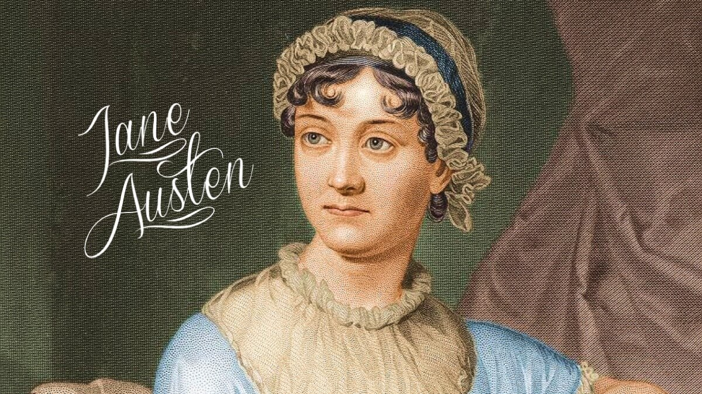
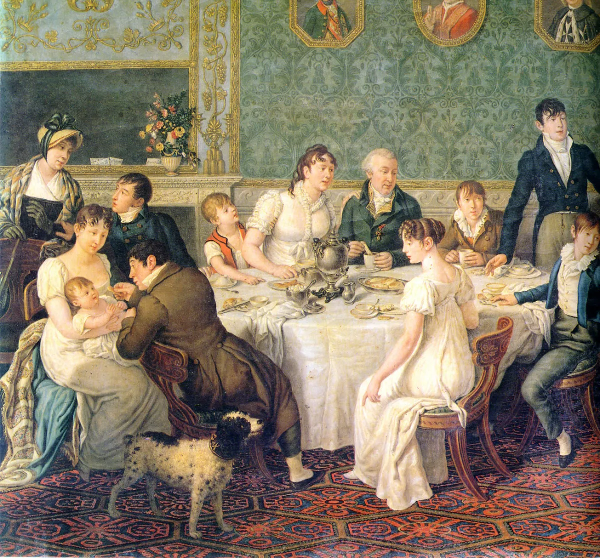

Jane Austen

Jane Austen was one of the most influential writers in English literature, known for her wit, realism, and insightful portrayal of society. Her novels explore themes of love, class, and personal growth, and they continue to captivate readers around the world.
Jane Austen was born on December 16, 1775, in Steventon, Hampshire, England. She was the seventh of eight children in a close and intellectually lively family. Her father, Reverend George Austen, was a clergyman who encouraged reading, discussion, and education within the household.
Austen received most of her education at home, where she developed a deep love for literature. She read widely and began writing poems, short stories, and plays while still a teenager. These early writings, created mainly for family entertainment, revealed her sharp wit and storytelling ability.
Growing up in rural England greatly influenced her understanding of social class, relationships, and everyday life—elements that later became central themes in her novels.

Jane Austen’s novels are celebrated for their realism, wit, and deep psychological insight. Each work explores themes of love, class, morality, and personal growth within the social structure of Regency England.
Pride and Prejudice, first published in 1813, is Jane Austen’s most celebrated and enduring novel. Originally written under the title First Impressions, the book offers a sharp and witty exploration of love, marriage, and social class in early nineteenth-century England. Through irony, humor, and keen psychological insight, Austen examines how personal flaws—particularly pride and prejudice—can shape human relationships and moral judgment.
Key Detail: Originally titled First Impressions.

Sense and Sensibility, published in 1811, was Jane Austen’s first novel to appear in print and marked the beginning of her successful literary career. Originally written in epistolary form, the novel was later revised into a narrative style, showcasing Austen’s early mastery of character development, social observation, and moral insight. Through wit and emotional depth, the novel explores the balance between reason and feeling in human relationships.
Key Detail: Austen’s first published novel.

Emma, published in 1815, is one of Jane Austen’s most sophisticated and playful novels, notable for its subtle irony and complex characterization. Unlike many romantic heroines of her time, Emma Woodhouse is wealthy, independent, and confident in her social position. Austen famously described her as “a heroine whom no one but myself will much like,” signaling a bold departure from traditional idealized protagonists.
Key Detail: Described as “a heroine whom no one but me will much like.”

Persuasion is Jane Austen’s final novel, published posthumously in 1817. The story centers on Anne Elliot, a quiet and thoughtful woman who was once persuaded to reject the man she loved, Captain Wentworth. Years later, they meet again, and long-suppressed emotions begin to surface. The novel explores themes of enduring love, regret, and second chances. Unlike Austen’s earlier works, it has a more mature and reflective tone. Social class and personal growth play important roles in the story. Through Anne’s patience and emotional strength, Austen highlights inner worth over social status. Persuasion is widely admired for its depth and emotional subtlety.
Key Detail: Published posthumously by her brother.

Mansfield Park, published in 1814, is one of Jane Austen’s most complex and morally serious novels. The story follows Fanny Price, a shy and principled young woman sent to live with her wealthy relatives at Mansfield Park. Surrounded by privilege and social pressure, Fanny observes the flaws and hypocrisy of those around her. Unlike Austen’s more lively heroines, Fanny’s strength lies in her moral integrity and quiet resilience. The novel explores themes of social class, duty, and personal conscience. Austen critiques superficial charm and moral carelessness through the actions of other characters. Mansfield Park is often praised for its depth and ethical insight.
Key Detail: Considered Austen’s most complex novel.

Northanger Abbey, published in 1817 after Jane Austen’s death, is a playful and satirical novel that parodies the popular Gothic fiction of its time. The story follows Catherine Morland, a young and imaginative heroine who loves sensational novels. When she visits Bath and later Northanger Abbey, her imagination leads her to suspect dark secrets where none exist. Austen humorously contrasts fantasy with reality, encouraging readers to value common sense over melodrama. The novel explores themes of imagination, maturity, and social expectations. Through Catherine’s growth, Austen gently critiques naïve thinking and romantic excess. Northanger Abbey is admired for its wit, charm, and self-aware humor.
Key Detail: A parody of Gothic novels popular at the time.

Jane Austen’s literary career developed quietly but steadily during a period when women writers received little public recognition. Through discipline, observation, and wit, she transformed everyday social life into enduring works of literature.

During her teenage years, Austen wrote short stories, parodies, and early versions of novels such as Elinor and Marianne and First Impressions, which later became Sense and Sensibility and Pride and Prejudice.
Austen achieved her first literary success with the publication of Sense and Sensibility. The novel was released anonymously and received favorable reviews.
The publication of Pride and Prejudice, Mansfield Park, and Emma brought Austen wider recognition. Her realism and psychological insight distinguished her work.
Austen completed Persuasion shortly before her death. It was published posthumously along with Northanger Abbey, revealing a more mature and reflective style.
Jane Austen’s literary legacy continues to shape literature, culture, and popular imagination. Her works remain relevant due to their universal themes and timeless characters.

Austen’s realistic storytelling, irony, and psychological depth transformed the English novel and influenced generations of writers.

Her novels continue to be widely read, adapted into films and television, and studied in schools and universities worldwide.

Austen’s portrayal of women, relationships, and society has made her a central figure in literary and cultural discussions.
Beyond her novels, Jane Austen led a quiet yet intellectually rich life. Her personal experiences, values, and observations deeply influenced her writing.
Jane Austen never married, a decision that allowed her a degree of independence unusual for women of her time. She lived closely with her family, especially her sister Cassandra, who was her closest companion and confidante.
Austen was known for her sharp wit, lively conversation, and keen sense of humor. She observed social behavior closely, drawing inspiration from everyday interactions, family gatherings, and rural community life.
Despite limited financial means, she remained devoted to her writing, often working in shared family spaces. Her discipline and quiet determination shaped the subtle realism and emotional depth found in her novels.
In her final years, Jane Austen’s health gradually declined, yet her commitment to writing never faded. Despite physical weakness, she continued to revise and complete her literary work, producing some of her most emotionally mature writing.
Jane Austen died on July 18, 1817, at the age of 41, in Winchester, England. She was buried in Winchester Cathedral, a place that later generations would recognize as a fitting tribute to her lasting contribution to English literature.
Although her fame during her lifetime was limited, her novels soon gained greater recognition after her death, ensuring her place among the most respected writers in literary history.